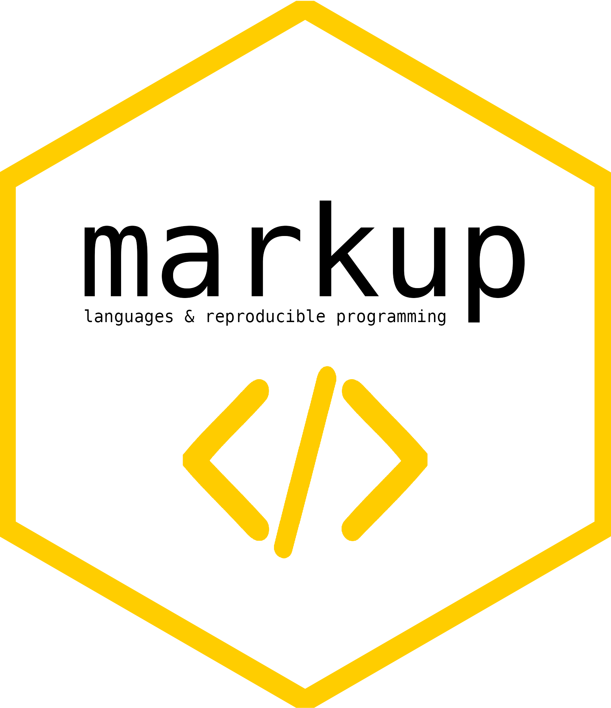

Welcome to MLaRPiS
![]()
13 Sep 2023
Disclaimer
I owe a debt of gratitude to many people as the thoughts and code in these slides are the process of years-long development cycles and discussions with my team, friends, colleagues and peers. When someone has contributed to the content of the slides, I have credited their authorship.
Scientific references are in the footer. Opinions and figures are my own.
Introduction to the course
Course Aims & Outline
Official: This course gives an overview of the state-of-the-art in statistical markup, reproducible programming and scientific digital representation.
Realistic: Hanne and Gerko will give you peek into our lives as opinionated developers. We will cover:
| Week | Date | Focus | Location |
|---|---|---|---|
| 1 | 13 Sep | Introduction to Markup Languages; and LaTeX | BOL 1062 |
| 2 | 27 Sep | Markdown in (most) Flavors | BOL 1025 |
| 3 | 01 Nov | Version Control and Development Flow | SGG 128 |
| 4 | 08 Nov | Reproducible Research Repositories | BOL 1025 |
| 5 | 22 Nov | Developer Portfolio | BOL 1025 |
| 6 | 06 Dec | Packages, Code Robustness and Unit Testing | BOL 1025 |
Course materials
Important
We won’t use Blackboard. All materials can be found at
Hand in
All contributions to this course are to be delivered to this repository
github.com/gerkovink/markup2023
Please post your content-related questions as an issue in the same repository
Finalization
Deadline for all is Jan 8 2024. Grades will be available Jan 12 2024
Deliverables
You must submit a portfolio that proves
- That you can use markup languages for scientific manuscript writing
- That you can produce a reproducible repository that conforms to rigorous open science and computing standards
- That you can present this portfolio using markup languages
- That you are able to develop, test, maintain and host this portfolio
This means
that you should cover at least
- Markup manuscript in either \(\LaTeX\) or
Quarto - Research repository detailing a reproducible simulation with proper licencing
- Personal repository (website that showcases your work) hosted with GitHub pages.
and one of
- An error-free compilable source R-package on a GitHub with proper licencing, tests, version sequence and a referable DOI
- A Shiny app hosted on GitHub with proper licensing, version sequence and a referable DOI and with an error free Shinyapps.io
A more comprehensive portfolio can result in extra credit in the form of a higher grade.
Understanding Markup
What is Markup?
A markup language is a system for annotating a document that provides structure and meaning to the content, allowing it to be processed and displayed in a consistent manner across different platforms and devices.
Extremely brief history
- GML (Generalized Markup Language): Developed in the 1960s by IBM, GML was one of the first markup languages. It was designed to help with the publishing process by defining the structure and content of documents.
- SGML (Standard Generalized Markup Language): Evolved from GML in the 1980s, SGML became an ISO standard and was used as the basis for several other markup languages, including HTML.
- HTML (HyperText Markup Language): Developed in the early 1990s by Tim Berners-Lee, HTML became the standard markup language for creating web pages. It’s a subset of SGML.
- XML (eXtensible Markup Language): Introduced in the late 1990s, XML was designed to store and transport data. Unlike HTML, which is about displaying information, XML is about carrying information.
Technically speaking
- TeX (aka \(\LaTeX\)) is not a markup language, but a software system for document preparation. This is because plain text is used as opposed to other markup languages. However, markup tagging conventions are used to define and stylize document stucture, graphical elements, citations and text.
- Markdown is an extremely simplified alternative to document preparation software systems.
markdownis a lightweigt markup language that can be edited using any text editor, while being quick and easy to compile. It is nowadays widely considered as the language of the internet as it bridges most great attributes of other markup languages. - Quarto is even more comprehensive as it is an open-source scientific and technical publishing system.
quartois aimed at delivering reproducible, consistent Pandoc markdown documents that unify the best of all other markup languages.
Importance in digital representation
- Consistency: Markup languages ensure that content is displayed consistently across different platforms and devices.
- Separation of Content and Presentation: Markup languages allow for a clear distinction between content and how it’s presented. This separation makes it easier to repurpose content for different mediums or platforms.
- Interoperability: Markup languages enable different systems and applications to communicate with each other by providing a standardized way to represent data.
- ease of mind: Styles in modern markup languages allow you to focus on the content and not
Everyday interactions with markup
- HTML in Everyday Life:
- Web Browsing: Every time you visit a website, you’re interacting with content structured by HTML. From paragraphs to images to links, all are defined using HTML tags.
- Emails: Many emails, especially those with formatting, images, or links, are compose using HTML.
- Online Platforms: Social media posts, blogs, and even some word processors use HTML behind the scenes to structure and display content.
- XML in Everyday Applications:
- Data Storage: Many applications use XML to store configuration data, user settings, or other information.
- Office Documents: Formats like Microsoft’s .docx (Word) or .xlsx (Excel) are essentially zipped XML files. When you save a Word document, you’re saving XML data.
- Web Services: Many web services and APIs return data in XML format, which is then processed and displayed by the application.
- RSS Feeds: Used by news websites and blogs to syndicate content, RSS feeds are XML documents that can be read by various applications.
\(E=MC^2\)
Important
Be careful with your online carbon footprint
In the grand scheme of things, trivial activities like emailing, chatting and video conferencing may seem insignificant. Collectively it adds up to a much larger carbon footprint than needed.
Everything that you do online is either energy or costs energy. And cloud storage means burning carbon for eternity.
Traditional Word Processors vs Scientific Writing
Graphical (Word) Processors
- While Word and similar word processors have built-in equation editors, they often lack the flexibility and customization options that markup languages offer.
- Formatting equations consistently across a large document or multiple documents can be challenging in Word.
- Collaborating on complex scientific documents with multiple authors can lead to formatting inconsistencies, especially when different versions of the software are used.
- Integration with other Tools is not always straightforward or impossible.
- Word documents, especially those with complex equations, might not always display consistently across different devices or software versions.
Markup languages
- Markup languages (especially \(\LaTeX\)) provide precise control over the layout and appearance of elemants and equations.
- The same code will produce the same output regardless of the platform or software version, ensuring consistency.
- Simple integration with version control systems, reference managers, and other tools essential for scientific writing.
- Many scientific journals provide \(\LaTeX\) or markdown templates, making it easier for researchers to prepare manuscripts that meet specific formatting requirements.
Why are we teaching you Markup?
If you prefere lists:
- Reproducibility (Wk2)
- Version controlling and Collaboration (Wk3)
- Consistent presentation
- Time-saving (After this course)
- Modular nature
- Bibliography management (Wk1)
- Oh, Behave (Wk 1-6)
If you prefer arguments:
- It is the standard in scientific publishing and research
- We prepare you for a career built on scientific principles
- Journal styles
About \(\LaTeX\)
The evolution of TeX and \(\LaTeX\)
TeX: Birth of a Typesetting Revolution
- 1978: Donald Knuth, a computer scientist, develops
TeX, a typesetting system. - Motivation: Dissatisfaction with the quality of typesetting in his book, “The Art of Computer Programming”.
- Key Features: Precise control over typography, mathematical typesetting, and cross-referencing.
- 1978: Donald Knuth, a computer scientist, develops
LaTeX: Building on TeX’s Foundation
- Early 1980s: Leslie Lamport creates \(\LaTeX\), a document preparation system based on
TeX. - Goal: Simplify the complex
TeXformatting commands, making it more accessible to a broader audience. - Advantages: Provides document structure through commands like
\sectionand\tableofcontents.
- Early 1980s: Leslie Lamport creates \(\LaTeX\), a document preparation system based on
TeX and \(\LaTeX\): A Symbiotic Relationship
- \(\LaTeX\) builds on the
TeXtypesetting engine, allowing users to create professional documents and presentations. - \(\LaTeX\) packages extend functionality, catering to various types of documents (e.g., articles, theses, presentations).
- \(\LaTeX\) builds on the
Precision
- Unmatched Typography Precision:
TeXandLaTeXexcel at typesetting with precise control over fonts, layout, and mathematical notation.
- Ideal for academic papers, theses, and publications with complex formatting requirements.
- Superior Mathematical Typesetting:
LaTeX’s native support for mathematical notation makes it the go-to choice for scientists, engineers, and mathematicians.
- No more MS equation editor
- Cross-Referencing and Bibliography Management: Effortlessly manage references and citations with BibTeX in
LaTeX.
- Automatic numbering, referencing, and bibliography generation.
- Collaboration and Version Control:
LaTeXdocuments can be easily managed using version control systems likeGit(Wk 3).
- This makes it straightforward to collaborate simultaneously on the same text and documents.
And…
- Professional Look and Feel: LaTeX produces documents with a professional and consistent appearance.
- This explains the popularity in academia, research, and publishing.
LaTeX Ecosystem: A vast collection of packages and templates is available on CTAN to cater to diverse document types.
Long-Term Stability: Documents created with TeX and LaTeX have a long shelf life.
- Because
TeXis software, it ensures compatibility across different platforms and software versions.
Hands on
- Introduction to
LaTeXand the basics ofLaTeXfor scientific writing. see this week’s lab - Incorporating equations. background
- Incorporating figures and tables. background

Collaborative LaTeX Editing with Overleaf
Overleaf is an online LaTeX editor that allows users to create, edit, and collaborate on LaTeX documents in real time.

It’s a cloud-based platform that eliminates the need for local LaTeX installations and simplifies the collaborative writing process.
Benefits of Using Overleaf
- Collaborate with colleagues and teammates in real time, regardless of their physical location.
- Multiple users can edit the same document simultaneously, making group projects efficient.
- Device agnostic and therefore worry-free.
- Overleaf integrates with Git, allowing users to track changes, revert to previous versions, and manage document history.
- Overleaf offers a vast library of templates for various document types, including research papers, theses, presentations, and more.
- Overleaf compiles
LaTeXdocuments in the cloud, so you don’t need to configure or runLaTeXlocally. - It just works!
Potential Challenges of Using Overleaf
Internet Dependency: Overleaf requires a stable internet connection.
Limited Offline Access: Overleaf operates online, which means no internet, no access to the convenience of Overleaf.
Privacy Concerns: Sensitive or confidential documents may not be suitable for upload to Overleaf. You should always consider data privacy!.
Subscription Costs: basic Overleaf is free, but more advanced features and collaboration options are costly.
LaTeXdiff
LaTeXdiff is a tool (PERL script) used to highlight and track changes between two versions of a LaTeX document.
It’s particularly useful for collaborative writing and when reviewing or revising documents.
How LaTeXdiff Works
LaTeXdiff operates by comparing two LaTeX files:
- The original version (e.g.,
document-v1.tex) - The revised version (e.g.,
document-v2.tex)
LaTeXdiff identifies differences in the text, equations, figures, and more. LaTeXdiff then generates a new LaTeX file highlighting these differences, using color coding, strikethrough and other visual cues.
How to LaTeXdiff in theory and practice

Bibliography management
- Zotero –> Hanne will introduce Zotero as a tool for collecting, organizing, and citing research materials.
- BibTeX –> Gerko will say something about BibTeX in conjunction with LaTeX for citation management.
Exit
Topics covered so far
- This course
- Markup languages
LaTeX- Overleaf
LaTeXdiff- Zotero
Next meeting
Markdown + hand in the exercise in this week’s lab


Gerko Vink and Hanne Oberman - Markup Languages @ UU